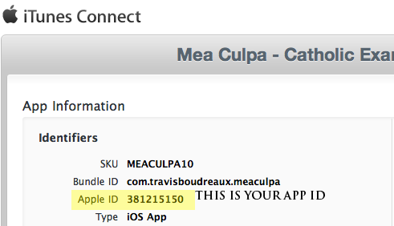

Table of Contents
Requirementstop
The following is required to run use the service:
- PHP 5 or greater with CURL enabled.
Find Your App IDtop
Login to iTunes Connect by going to the Apple Developer portal here. Once you are logged in, click on the iTunes Connect icon. You will now be on a page with a list of your applications. Click on the application you are setting up a site for.
Selecting The ID
Once you've found your application and opened it, you will see a screen similar to the one shown here. You can copy the Apple ID from the site, and paste it into the contructor of the class.
Create a new instance of the Classtop
Now that you've found your APP ID, you can instantiate a new class with the following:
//The app ID for your app
$appId = "284910350";
//require the library to connect to iTunes
require_once "ITunesAppStoreService.php";
//create a new instance of ITunesAppStoreService
$app = new ITunesAppStoreService($appId);
//manually call retrieve when you are ready to make the remote call to the iTunes Web Service
try{
$app->retrieve();
} catch (Exception $e) {
//the class will throw an error if you do not set the app ID in the
//constructor, or if the iTunes Web Service returns some invalid data.
echo $e->getMessage();
}
Available Fieldstop
Once you've ran the retrieve function you will have access to the following public class variables:
$app->averageRating //The average of all of the ratings for your app $app->description //The description you set in iTunes Connect for your app $app->developerUrl //The developer url you listed for the app in iTunes Connect $app->iTunesWebUrl //The web based version of iTunes preview URL $app->largeThumbnail //The large thumbnail you upload for your app in iTunes Connect. 512x512 $app->name //The name of your app in iTunes Connect. $app->numberOfRatings //The total number of ratings for all versions of your app $app->numberOfRatingsForCurrentVersion //The total number of ratings for the current version of your app $app->price //The current price of your app $app->isFree //A boolean value to check if your app is free or paid. $app->iPhoneScreenshots //An array of urls to your iPhone screenshots. $app->iPadScreenshots //An array of urls to your iPad screenshots. $app->smallThumbnail //The small thumbnail your upload for your app in iTunes Connect. $app->version //The current version number published in the store of your app.